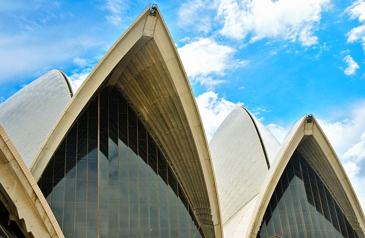

Sydney
Sydney is the capital city of the state of New South Wales, and the most populous city in Australia and Oceania. Located on Australia's east coast, the metropolis surrounds Port Jackson and extends about 70 km (43.5 mi) on its periphery towards the Blue Mountains to the west, Hawkesbury to the north, the Royal National Park to the south and Macarthur to the south-west. Sydney is made up of 658 suburbs, spread across 33 local government areas. Residents of the city are known as "Sydneysiders". As of June 2020, Sydney's estimated metropolitan population was 5,367,206, meaning the city is home to approximately 66% of the state's population. Nicknames of the city include the 'Emerald City' and the 'Harbour City'. Indigenous Australians have inhabited the Sydney area for at least 30,000 years, and thousands of engravings remain throughout the region, making it one of the richest in Australia in terms of Aboriginal archaeological sites. Around 29 clan groups of the Eora Nation inhabited the region at the time of European contact. During his first Pacific voyage in 1770, Lieutenant James Cook and his crew became the first Europeans to chart the eastern coast of Australia, making landfall at Botany Bay and inspiring British interest in the area. In 1788, the First Fleet of convicts, led by Arthur Phillip, founded Sydney as a British penal colony, the first European settlement in Australia. Phillip named the settlement after Thomas Townshend, 1st Viscount Sydney. Penal transportation to New South Wales ended soon after Sydney was incorporated as a city in 1842. A gold rush occurred in the colony in 1851, and over the next century, Sydney transformed from a colonial outpost into a major global cultural and economic centre. After World War II, it experienced mass migration and became one of the most multicultural cities in the world. At the time of the 2011 census, more than 250 different languages were spoken in Sydney. In the 2016 Census, about 35.8% of residents spoke a language other than English at home. Furthermore, 45.4% of the population reported having been born overseas, and the city has the third-largest foreign-born population of any city in the world after London and New York City. Between 1971 and 2018, Sydney lost a net number of 716,832 people to the rest of Australia but its population has continued to grow, largely due to immigration.
Sydney Opera House
One of the world's great icons, the Sydney Opera House is a UNESCO World Heritage Site and the star attraction on the glittering harbor. This graceful building, shaped like shells or billowing sails, perches on a finger of land surrounded by water. You have several options for visiting the Sydney Opera House. Snap a photo while gliding by on a harbor cruise, relax at one of the restaurants, stroll around its exterior, or take an organized tour of this magnificent structure. Inside, you'll find theaters, studios, exhibition rooms, a concert hall, and cinema. Book a Sydney Opera House Guided Walking Tour to learn about the history and get a behind-the-scenes look at this famous building. This is a flexible ticket that allows you to join any one of the tours throughout the day, departing every half hour from 9am to 5pm. Avid photographers should head to Mrs Macquarie's Chair for one of the best photo opportunities. Note that the building is undergoing a 10-year, $275-million upgrade, but it will continue to operate during the restoration.
Sydney Harbour Bridge

Nicknamed the "Coathanger," the Sydney Harbour Bridge is another Sydney icon. Supported by massive double piers at each end, it was built in 1932 and remains the world's largest steel arch bridge. You can drive over it, cruise below it, chug over it on a train, or photograph it from afar. But one of the best ways to appreciate this marvel of engineering, and soak up the spectacular views of Sydney Harbour, is on a climb to its 135-meter-high summit. Scaling the bridge is one of Australia's top outdoor adventures, and you can choose from a range of different tours. Sydney BridgeClimb takes groups on an approximately 3.5-hour climb to the top of the outer arch. Tours run throughout the day, beginning with a dawn climb and ending with a night climb. You can also choose from different types of climbs, including an Indigenous storytelling experience and a climb right across the arch to the other side – the bridge connects the harbor's north and south shores. Guided ascents of the bridge include a pre-climb prep talk, safety gear, and a photo on the summit. Along the way, you'll learn all kinds of entertaining stories about the history of the bridge. One of its most famous workers was non other than Paul Hogan, aka Crocodile Dundee, before he became famous. To learn more about the fascinating history of the bridge's construction, visit the museum in the southeastern pier.
Harbor Cruise at Circular Quay

Sydney is famous for its sparkling waterfront setting, and one of the most popular things to do in Sydney Harbour is a sightseeing cruise. Most harbor cruises depart from Circular Quay in Sydney Cove, which is also home to the city's main ferry terminal. Short on time? Book the two-hour Sydney Harbour Coffee Cruise, which takes you past all the harbor highlights and to some of the most scenic places in Sydney, including the Opera House, the Sydney Harbour Bridge, and Fort Denison. Learn fascinating facts about the key sights along the way, and keep your camera ready – you'll have plenty of photo ops. Prefer to spot some wildlife during your tour? During the annual winter whale migration, the Sydney Whale-Watching Cruise take passengers out past Sydney Heads to view these magnificent creatures. Don't have time for a harbor cruise? You can still see some of the top sites on a ferry ride around the harbor. Ferries depart from Circular Quay to prime spots, such as Manly, Watsons Bay, and Taronga Park Zoo. Insider's tip: From Circular Quay, you can easily walk to other top Sydney tourist attractions. Head south along the waterfront promenade to the Sydney Opera House and the Royal Botanic Gardens, and a short walk to the north leads to the Sydney Harbour Bridge and the Rocks historic area. To the west, the free Museum of Contemporary Art, housed in an Art Deco building, displays cutting-edge, and often controversial, exhibitions.
Darling Harbour
Darling Harbour has something for everyone. Packed with tourist attractions, this waterfront precinct on the western side of Sydney's CBD is a hub for tourists and locals alike. You'll find everything here, from shops, restaurants, and entertainment venues to museums, a zoo, aquarium, and an IMAX theater. Families will love Madame Tussaud's; the WILD LIFE Sydney Zoo; and the SEA LIFE Sydney Aquarium, which contains the world's largest collection of Australian marine creatures. The SEA LIFE Sydney Aquarium Entrance Ticket is a great way to get ahead of the crowds. The Powerhouse Museum offers interactive exhibits on science, technology, design, and history, and nautical-minded history buffs can board a replica of Captain Cook's ship, the HMB Endeavour, at the Australian National Maritime Museum. And while you're wandering around, keep an eye out for colorful artwork along the Darling Harbour Street Art Trail.